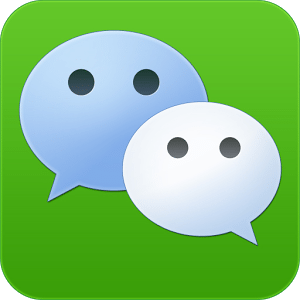

27% de la población de smartphones. Sistema operativo: Android, iOS, Windows Phone y BlackBerry 10. La gran sorpresa de la lista es el sistema chino de comunicación móvil que superó a su principal competidor, WhatsApp. Menu principal
27% de la población de smartphones. Sistema operativo: Android, iOS, Windows Phone y BlackBerry 10. La gran sorpresa de la lista es el sistema chino de comunicación móvil que superó a su principal competidor, WhatsApp.